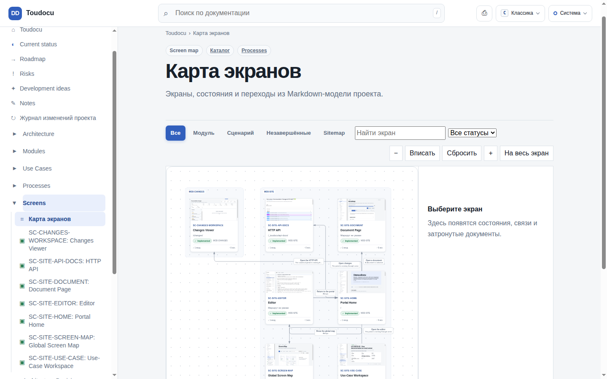
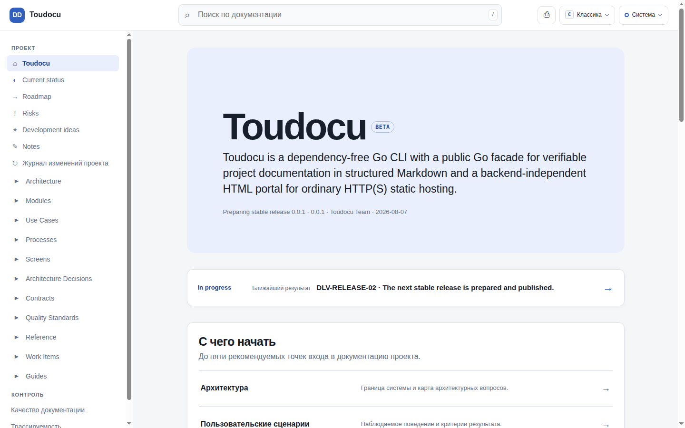
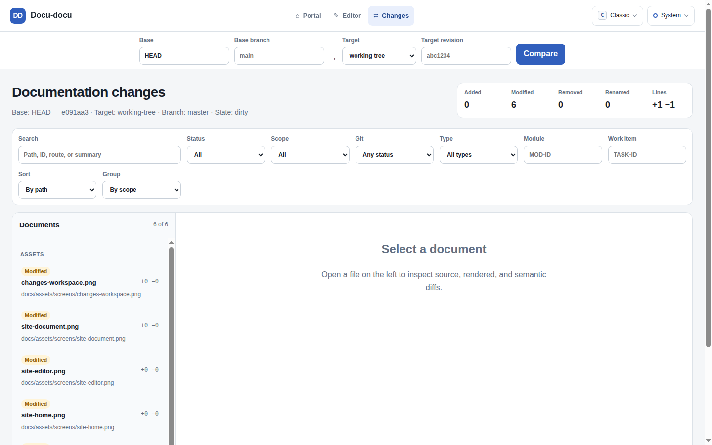

FOR ENGINEERS
Find architecture, requirements, and tasks in the same repository as your code.
MARKDOWN · GIT · NODE.JS
Check and edit Markdown, review Git changes, and hand tasks to a coding agent. All in one local portal.
toudocu check ./docstoudocu serve ./docstoudocu build ./docs --output ./siteFOR ENGINEERS
Find architecture, requirements, and tasks in the same repository as your code.
FOR DOCUMENTATION AUTHORS
Edit Markdown in your browser, check links, and publish the documentation.
FOR AGENTS
Get requirements, dependencies, and rules for a specific task.
DOCUMENTATION CHECKS
Find broken links and document errors before publishing. You still need to review the descriptions for accuracy.

PUBLISHING
Build a site with search and diagrams for GitHub Pages or another static host. Readers do not need Toudocu.

CLI COMMANDS
Check your docs, build a site to publish, or open the local portal.
toudocu check ./docs --stricttoudocu build ./docs --output ./site --cleantoudocu serve ./docsCHANGE REVIEW
See what changed in the text and on the page. Leave questions on changed files.

INSTALL THE CLI
Copy the command for your system and run it in your terminal. Requires Node.js 24 or later.
curl -fsSL https://github.com/lumenikoly/toudocu/releases/latest/download/install.sh | sh
irm https://github.com/lumenikoly/toudocu/releases/latest/download/install.ps1 | iex
Your docs stay as files in Git. Toudocu helps you read, check, and update them.
Find errors in your docs and links. Run checks yourself or as part of your project build.
toudocu check ./docs
Build a read-only site with search, diagrams, and links between requirements, tasks, and decisions.
toudocu build ./docs
Edit docs right in your browser. See the result and any errors after saving.
toudocu serve ./docs
Compare text, diagrams, and APIs before and after edits. See which tasks are affected.
toudocu changes ./docs
See how your app’s screens connect. Walk through user scenarios step by step.
screens/SC-*.md
Leave questions and requests next to the text. Ask an agent to review them — its reply appears in the same discussion.
Discussions in the local portal
Give an agent a task together with its requirements, project rules, and checks.
toudocu task context TASK-ID ./docs
Ask your agent to update the docs after code changes.
$toudocu refresh diff
Connect Toudocu to your agent using the steps below. Already have docs? Open them with toudocu serve ./docs.
toudocu skill install --agent codexInstall the skill for Codex from your project root. Claude Code and GitHub Copilot are also supported.
$toudocu initSend this message to your agent with the skill installed. It reads the repository and creates documentation.
toudocu check ./docsRun this in your terminal to check structure and links. Review what the agent wrote.
toudocu serve ./docsOpen the local address printed in your terminal. Read, edit, and discuss changes.
$toudocu refresh diffAfter changing code, send this message to your agent to update the related docs.